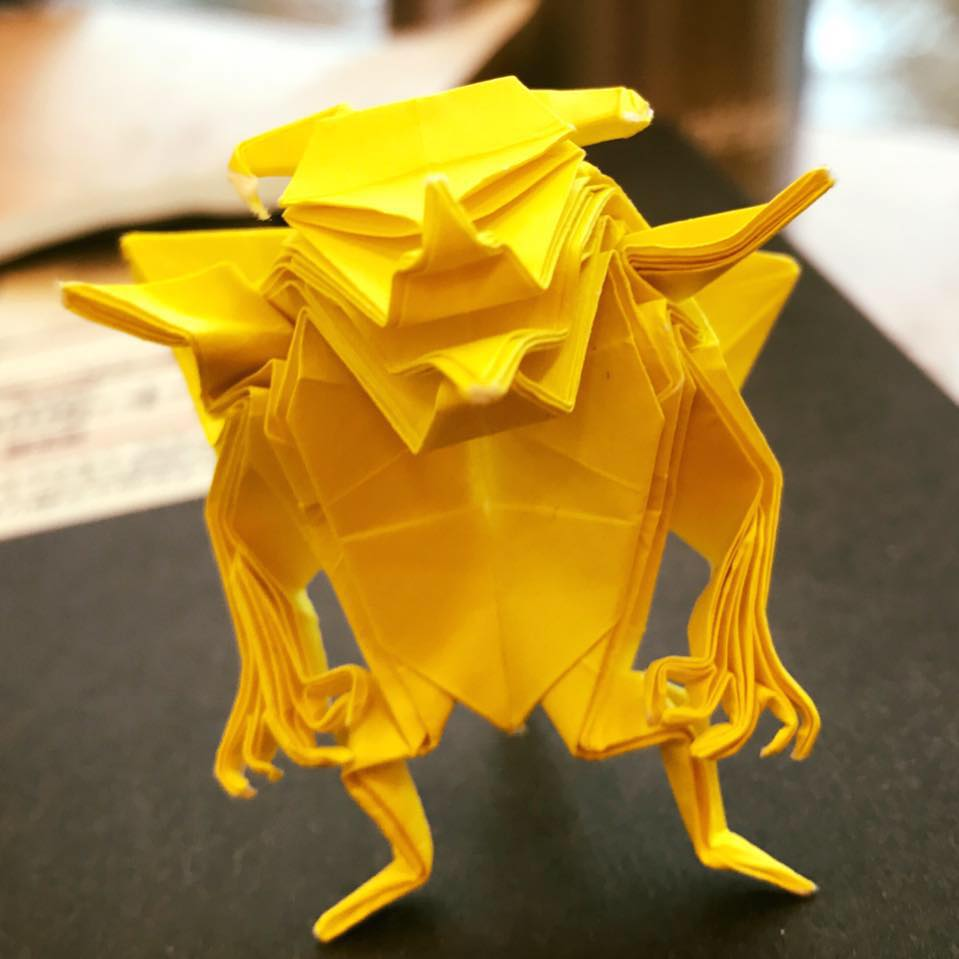
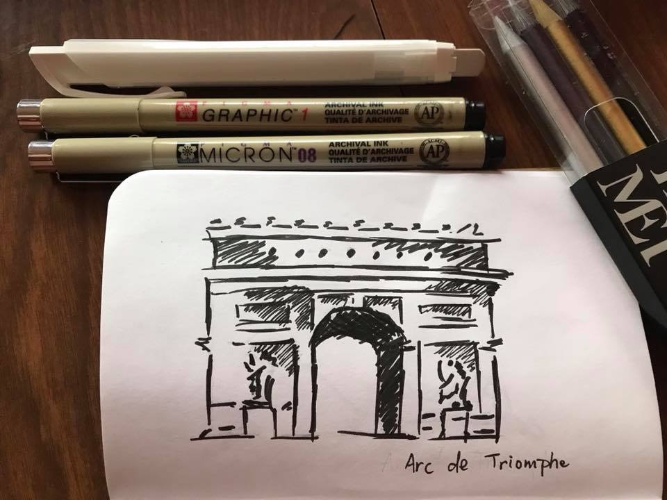
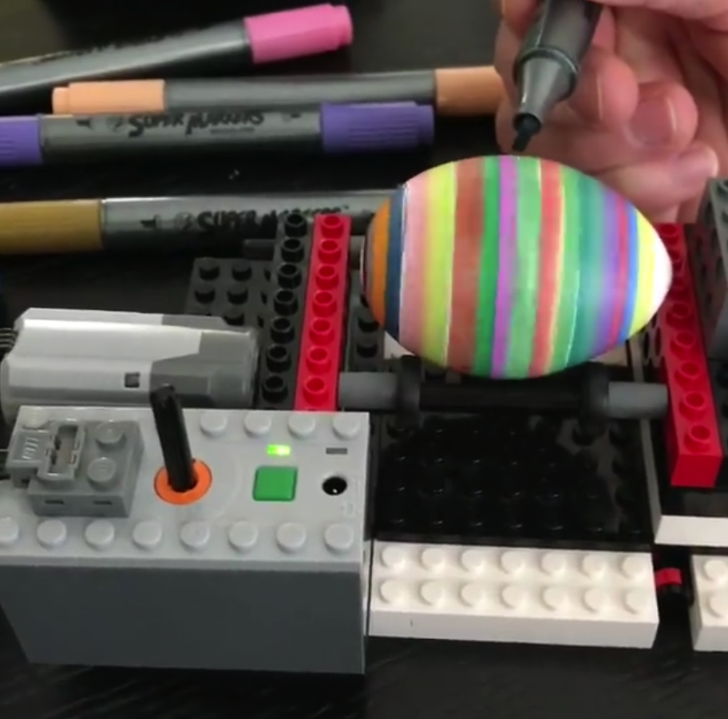

My Job Experience
Electrical Engineer
I was an Electrical Engineer working as a Application Engineer and then a Design Engineer specifically for power supply/DC-DC converters for six years after graduating from WPI. When my son was about ten months old, I went from a working mom to a stay-at-home mom. I took him to music classes and play groups so he could enjoy his early years with friends.
Front-End Web Developer
Once my two kids started going to school full-time, I wanted to learn to do something new with a flexible schedule. That was when I found out about the Grow with Google Front-End Development Scholarship Program. I was fortunate enough to move on from Phase I to Phase II of the program. I learned so much from working through the course materials within a short ten weeks. This Portfolio is actually my first Project in Phase II.
My Interests
Origami
I love using a sheet of plain paper and making it into complicated artwork. This is an origami model that took me about two weeks to master. It is the Origami Devil created by Origami Artist Jun Maekawa.
Sketching and Painting
I just began experimenting with watercolors and I love watching the interaction between water, pigment, and paper. I sketched this image during Thanksgiving morning. I saw a picture of this structure online and thought to myself, "it looks simple, let me try and draw it!"
LEGO
I love building with LEGOs especially creating models that needs power to move.
This egg decorator model is a simplified version of a lot of similar models you can find online. Originally I tried to make it with a lot more gears with a fixed output battery pack, but I ran out of the gears that I needed. so I decided to use an adjustable power block instead. By varying the speed one gear, I was about to optimize the support the axles could provide to make the spin as smooth as possible. I was very happy with this creation.What I do Now
Volunteering
I don't actually have a job these days. But I volunteer at my kids' schools pretty often. I maintain the PTG's website for my kids' elementary schools. The site was created with WordPress so it was pretty easy to make.
Local Shop Webmaster
Once every few weeks I help a local small business update their website and newsletter. This has been a great opportunity for me to get real-life web developing experience.
FEND Student
I try to work on my FEND course at least an hour during the day and 2-3 hours at night. You can read about my process on my blog.